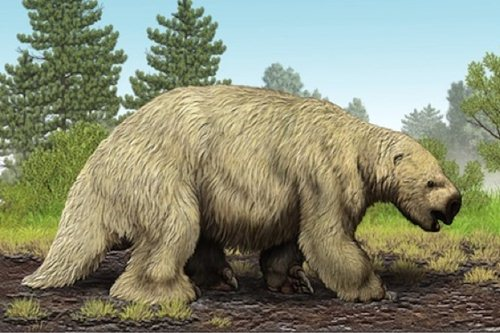

Part A
To make political decisions about the extent and type of forestry in a region it is important to understand the consequences of those decisions. One tool for assessing the impact of forestry on the ecosystem is population viability analysis (PVA). This is a tool for predicting the probability that a species will become extinct in a particular region over a specific period. It has been successfully used in the United States to provide input into resource exploitation decisions and assist wildlife managers and there is now enormous potential for using population viability to assist wildlife management in Australia’s forests.
A species becomes extinct when the last individual dies. This observation is a useful starting point for any discussion of extinction as it highlights the role of luck and chance in the extinction process. To make a prediction about extinction we need to understand the processes that can contribute to it and these fall into four broad categories which are discussed below.
Part B
|
A |
Early attempts to predict population viability were based on demographic uncertainty Whether an individual survives from one year to the next will largely be a matter of chance. Some pairs may produce several young in a single year while others may produce none in that same year. Small populations will fluctuate enormously because of the random nature of birth and death and these chance fluctuations can cause species extinctions even if, on average, the population size should increase. Taking only this uncertainty of ability to reproduce into account, extinction is unlikely if the number of individuals in a population is above about 50 and the population is growing. |
|
B |
Small populations cannot avoid a certain amount of inbreeding. This is particularly true if there is a very small number of one sex. For example, if there are only 20 individuals of a species and only one is a male, all future individuals in the species must be descended from that one male. For most animal species such individuals are less likely to survive and reproduce. Inbreeding increases the chance of extinction. |
|
C |
Variation within a species is the raw material upon which natural selection acts. Without genetic variability a species lacks the capacity to evolve and cannot adapt to changes in its environment or to new predators and new diseases. The loss of genetic diversity associated with reductions in population size will contribute to the likelihood of extinction. |
|
D |
Recent research has shown that other factors need to be considered. Australia’s environment fluctuates enormously from year to year. These fluctuations add yet another degree of uncertainty to the survival of many species. Catastrophes such as fire, flood, drought or epidemic may reduce population sizes to a small fraction of their average level. When allowance is made for these two additional elements of uncertainty the population size necessary to be confident of persistence for a few hundred years may increase to several thousand. |
Part C
Beside these processes we need to bear in mind the distribution of a population. A species that occurs in five isolated places each containing 20 individuals will not have the same probability of extinction as a species with a single population of 100 individuals in a single locality.
Where logging occurs (that is, the cutting down of forests for timber) forest- dependent creatures in that area will be forced to leave. Ground-dwelling herbivores may return within a decade. However, arboreal marsupials (that is animals which live in trees) may not recover to pre-logging densities for over a century. As more forests are logged, animal population sizes will be reduced further. Regardless of the theory or model that we choose, a reduction in population size decreases the genetic diversity of a population and increases the probability of extinction because of any or all of the processes listed above. It is therefore a scientific fact that increasing the area that is loaded in any region will increase the probability that forest-dependent animals will become extinct.